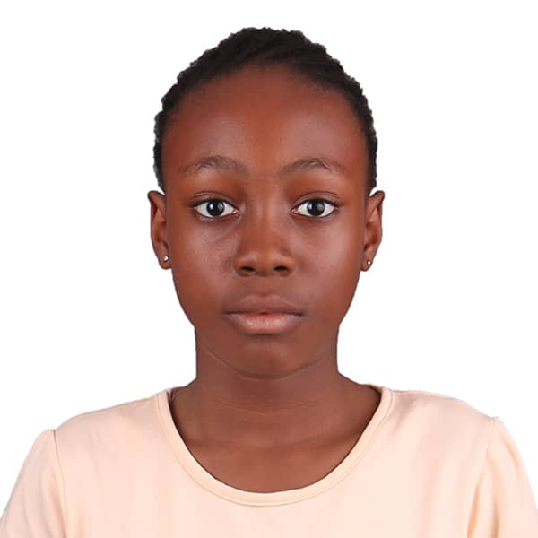

Welcome to my portfolio
I'm Kolawole DivineFavour Kosiso.
I am a student of MIVA Open University. What I am mostly intrigued about is turning real problems into working solutions. Almost every part of life now runs on software, including healthcare, banking, education, and communication, so being a software engineer can improve how people live at scale and it pushes me to want to develop something bigger for the mass.

Biography
I'm a first-year student at MIVA Open University, studying Software Engineering. I got into programming after seeing people typing in different programming languages, I got curious and wanted to know more. I then grew a passion for it, wanting to develop applications and fix bugs. Now I enjoy turning messy tasks into simple interfaces.
- Course Software Engineering
- Focus Front-end web development
- Based in Nasarawa, Nigeria